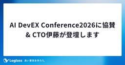

loglass_product_teamのブログ
https://prd-blog.loglass.co.jp/
株式会社ログラスのプロダクトチームによるブログです。
フィード

AI DevEX Conference2026に協賛 & CTO伊藤が登壇します
loglass_product_teamのブログ
ログラスは、2026年7月22-23日に開催される「AI DevEX Conference 2026」にGoldスポンサーとして協賛しています。Day2ではログラスCTO伊藤が登壇するほか、2日間ブース出展もします。弊社メンバーでお待ちしていますので、ぜひお気軽にお越しください！ 登壇セッションの紹介 『動くだけ』のその先へ — AI駆動開発で品質と速度を両取りする温故知新な新手法 登壇者：CTO 伊藤 博志日時：7月23日（木）16:50〜17:30会場：Room C Vibe Codingで「動くもの」は誰でも作れる時代になった。しかし、エンタープライズ顧客に届けるto Bプロダクトを高い…
4日前

【スクラムフェス金沢2026 2日目】形骸化したスクラムを乗り越え、真のチームになるには？
loglass_product_teamのブログ
こんにちは、株式会社ログラスの笹川尋翔です。 熱気あふれる1日目に続き、「スクラムフェス金沢2026」の2日目の模様をお届けします！ なお、本イベントは複数の部屋に分かれて同時にセッションが開催されるマルチトラック形式となっていました。魅力的なプログラムが裏で同時に進行しており、どれを聴くか非常に迷ったのですが、本レポートでは私が実際に足を運んで話を聴き、熱い刺激を受けたセッションに絞ってその学びをお届けします。 2日目のタイムラインも、地方でのリアルな開発現場の苦悩から、コミュニティの持続性に関する議論、組織論、心理学的なアプローチまで、非常にディープでバラエティ豊かな内容でした。1日目で得…
9日前
【スクラムフェス金沢2026 1日目】完璧ではない姿からアジャイルを考える
loglass_product_teamのブログ
こんにちは、株式会社ログラスの笹川尋翔です。弊社では、経営管理SaaS「Loglass」を展開しており、日頃からプロダクト開発においてアジャイルやスクラムを取り入れた開発を行っています。その一環として、先日開催されたスクラムイベント「スクラムフェス金沢2026」に参加してきました！ 左側は私、右側は今回のイベントで登壇された大石さん大学の同じ課外活動グループのメンバーでした スクラムフェス金沢は2024年から石川県で開催されているイベントです。2026年のスクラムフェス金沢も、全国から熱い実践者たちが集まり、会場は熱気に包まれていました。本記事では、現地で得たアジャイルやスクラムに関する知見や…
11日前
【協賛レポート】SRENEXT2026 当日の様子をご紹介！
loglass_product_teamのブログ
こんにちは。ログラスProductHRの永井です。この記事は2026年7月10-11日に開催された「SRENEXT2026」の協賛レポートです。ログラスは今回、PLATINUMスポンサーとして協賛させていただき、2名のセッション登壇およびブース出展を実施しました。 セッション① mekka登壇：「ちゃんとやっている」は独りよがりだった ― 不安に寄り添うインシデント対応へ MTTRは改善していたのに、なぜ現場の不安は消えなかったのか？「ちゃんとやっている」だけでは足りなかったインシデント対応の気づきを、「対話の重要性」に焦点を当ててまとめたセッションでした。 セッション後のアンケートでは、嬉し…
11日前
SRE NEXT 2026に協賛 & 弊社SREが登壇します
loglass_product_teamのブログ
ログラスは、2026年7月10-11日に開催される「SRE NEXT 2026」にPlatinumスポンサーとして協賛しています。当日は2名のSREメンバーが登壇するほか、ブース出展もします。弊社メンバーでお待ちしていますので、ぜひお気軽にお越しください！ 登壇セッション紹介 「『ちゃんとやっている』は独りよがりだった ― 不安に寄り添うインシデント対応へ」登壇者：mekka日時：7月10日（金）17:40〜18:10▶︎詳細はこちら「依頼文化をやめる日―EM視点で語るPlatformEngineeringとInclusiveSRE」登壇者：勝丸 真日時：7月11日（土）15:35〜16:05…
16日前
AWS Summit Japan 2026 参加レポート
loglass_product_teamのブログ
はじめに こんにちは、株式会社ログラスでSREをしている中井です。 2026年6月25日（水）・26日（木）の2日間、幕張メッセで開催された AWS Summit Japan 2026 の参加レポートを書こうと思います。最終日には自分自身が登壇する機会もいただいたので、その様子も合わせてお届けします。 AWS Summit Japan 2026に参加したログラスメンバー 現地の様子 会場は幕張メッセ。 今年は来場者数が会場だけで延べ36,000人超、オンラインを含めると過去最高の延べ69,000人超を記録したそうで、正直、ここまで大きい規模のカンファレンスに参加するのは初めてでした。 担当いた…
1ヶ月前
RSGT2026 にロゴスポンサーとして協賛しました
loglass_product_teamのブログ
こんにちは、株式会社ログラスのQAエンジニア森島(@m39ryo)です。 2026年1月7日〜9日に開催されたRegional Scrum Gathering Tokyo 2026（RSGT2026）に、株式会社ログラスはロゴスポンサーとして参加しました。 ベルサール羽田会場に入ってすぐに掲示されている横断幕 現地にはエンジニア・EM・デザイナー・QA・HR・内定者インターン生3名・ボランティアスタッフを含む計13名ものログラスメンバーが参加させていただきました。 RSGT2026から会場がベルサール羽田空港に変わりましたが、現地の熱量は圧倒的に増していると感じました。 私自身いろんな方々と交…
6ヶ月前
【協賛レポート】アーキテクチャConference2025協賛 当日の様子をご紹介！
loglass_product_teamのブログ
こんにちは。ログラスProductHRの永井です。この記事は2025年11月20-21日に開催された「アーキテクチャConference2025」の協賛レポートです。昨年から始まった本カンファレンスに、ログラスは2年連続で協賛させていただきました。 「ログラスのプロダクト基盤が挑む両立」についての紹介 今回ブースでは、今後ログラスがマルチプロダクト戦略を加速するにあたって不可欠な「プロダクト基盤」に焦点を当て、「プロダクト基盤×両立」というテーマでブース展開をしました。 その一環として、プロダクト基盤がどのような両立の難しさがあり、どうやって両立させようとしているのか？をボードで紹介しました。…
8ヶ月前
アーキテクチャConference 2025に協賛 & エンジニアが登壇します
loglass_product_teamのブログ
ログラスは11月20-21日に開催されるアーキテクチャConference 2025に昨年に続き、Goldスポンサーとして協賛しています。当日はログラスより2名の登壇のほか、ブースにエンジニアメンバーもおりますので、会場でお待ちしています！ セッションの紹介 スポンサーセッションとして2名が共同登壇します。ご参加予定の方はぜひ現地でご視聴ください。 詳細：弊社は全社横断での計画・分析を高度化するxP&A戦略を核に、複数の事業を迅速に立ち上げるマルチプロダクト戦略へと舵を切りました。しかし、全社共通で利用するデータ基盤と個別のアプリケーションとでは、アーキテクチャに求める「駆動力」が異なります。…
8ヶ月前
【協賛レポート】Kotlin Fest 2025協賛 当日の様子をご紹介！
loglass_product_teamのブログ
こんにちは。ログラスProductHRの永井です。この記事は2025年11月1日に開催された「Kotlin Fest 2025」の協賛レポートです。カンファレンスの概要や協賛の背景については、こちらの記事をご参照ください。ログラスはサーバーサイドKotlinを採用しており、コミュニティへの還元の気持ちを込めて去年に続きスポンサーをさせていただきました。 Kotlinに関するアンケートを実施 ブース企画として「Kotlinの好きなところは何ですか？」というお題で参加者の皆さんにアンケートを実施しました。 150名以上の方に付箋を貼っていただき、特に「null safeなところ」「KMPが便利」と…
9ヶ月前
Kotlin Fest 2025に協賛 & CTOおよびCTO室長が登壇します
loglass_product_teamのブログ
ログラスは11月1日に開催されるKotlin Fest 2025にゴールドスポンサーとして協賛しています。昨年に続き2年連続での協賛となります。ログラスはプロダクト開発にサーバーサイドKotlinを使用しており、今後もKotlinコミュニティを共に盛り上げていくために協賛させていただいています。当日はログラスより2名の登壇のほか、ブースでエンジニアメンバーがお待ちしておりますので、会場でお待ちしています！ セッションの紹介 当日は公募セッションで採択された2名が登壇します。ご参加予定の方はぜひ現地でご視聴ください。 登壇者① CTO 伊藤 博志 時間：17:20 - 18:00タイトル：Kot…
9ヶ月前
【ログラス】AI活用に関する記事・登壇資料まとめ
loglass_product_teamのブログ
ログラスメンバーによるAI活用に関する記事・登壇資料をまとめてお届けします。 CEO布川による記事 CTO伊藤による登壇資料 エンジニアメンバーによる登壇資料 エンジニアメンバーによるAI関連の記事はテックブログでも多数公開していますので、こちらもぜひご覧ください！
10ヶ月前
Platform Engineering Kaigi 2025 に参加しました
loglass_product_teamのブログ
こんにちは、株式会社ログラスでSREをしている中井です。 2025年9月18日に開催された「Platform Engineering Kaigi 2025 (PEK2025)」に、ログラスはスポンサーとして協賛しており、私も現地参加いたしました。本記事では、PEKの参加レポートをお届けします。 PEKに参加したログラスのSREメンバー なぜ私たちがPEKの概要や、なぜ私たちがPEKをスポンサーとして支援しているのかは、別記事で触れていますので、ぜひこちらもご覧ください。 prd-blog.loglass.co.jp 現地の様子 当日は会場に多くの参加者が集まり、熱気に満ち溢れていました。各セッ…
10ヶ月前
スクラムフェス三河2025へ参加しました
loglass_product_teamのブログ
こんにちは、ログラスでプロダクトデザイナーをしているたがや（＠tgy100）です。今回、9/5-9/6 に開催されたスクラムフェス三河2025へ参加したため、レポートを書いていきます。 私自身スクラムフェスへの参加は今回が2回目です。初参加はスクラムフェス金沢2025で大変充実していたため、今回も楽しみにしていました。しかし、台風の影響で新幹線が遅延してしまい Keynote に間に合わず、1日目は Networking Party からの参加となりました。 Networking Party ではスクラムフェス金沢2025でお会いした方々と再会できただけでなく、今年8月に開催された葛飾粟田祭り…
10ヶ月前
ログラスはPlatform Engineering Kaigi2025に協賛します
loglass_product_teamのブログ
ログラスは9月18日に開催されるPlatform Engineering Kaigi2025にBronzeスポンサーとして協賛しています。昨年に続き2年連続での協賛となります。 Platform Engineering Kaigi（PEK）とは PEK2025 は、プラットフォームエンジニアリングに関する知識と経験を共有するための専門カンファレンスです。（公式説明） 協賛の背景 ログラスではTech Valueである「Update Normal」の行動原則の1つに"技術的卓越性の追求と還元”を掲げており、自社での学びを積極的にコミュニティに還元していきたいと考えています。プロダクト開発は年々複…
10ヶ月前
Scrum Fest Mikawa 2025に協賛およびデザイナー井上・PdM木村が登壇します
loglass_product_teamのブログ
ログラスは9月5日〜6日に開催される「Scrum Fest Mikawa 2025」に協賛しています。スクラムコミュニティを共に盛り上げていきたいという思いで、今回Silver Sponsorをしております。 セッションの紹介 当日はデザイナー井上およびPdM木村によるセッションがございます。 デザイナー井上のセッション 時間 9/6（土） 13:30〜13:50 タイトル BXデザイン組織が挑んだスクラム 〜ブランドを育み、デザイナーを解放する変革の物語〜 詳細 「スクラム？なんやそれ？？」チームマネージャーからスクラム導入を勧められた時の正直な感想です。そんな私たちがなぜ、開発組織ではない…
1年前
Scrum Fest Sendai 2025に協賛およびログラスメンバー3名が登壇します
loglass_product_teamのブログ
ログラスは8月29日〜30日に開催される「Scrum Fest Sendai 2025」に協賛しています。スクラムコミュニティを共に盛り上げていきたいという思いで、今回Silver Sponsorをしております。 セッション・ワークショップの紹介 当日はエンジニア粟田のセッションおよび、エンジニア松岡・アジャイルコーチ大野によるワークショップがございます。 粟田のセッション 時間 8/30（土） 13:00〜13:45 タイトル 「AI時代を生き抜くために〜1年間のFAST実践で学んだ、自律分散型組織の可能性と難しさ〜」 詳細 AIの進化は、チームのあり方を根本から変えつつあります。Anysp…
1年前
スクラムフェス金沢2025参加レポート
loglass_product_teamのブログ
こんにちは、ログラス エンジニアの櫻井です。 6/13, 6/14 に開催されたスクラムフェス金沢に参加してきましたので、初スクラムフェス現地参加の雰囲気をお伝えします。 www.scrumfestkanazawa.org 会場は金沢駅から徒歩15分のITビジネスプラザ武蔵という施設でした。 www.hot-ishikawa.jp 金沢駅の巨大な門。鼓門と言って、金沢の伝統芸能である能楽で使う鼓がモチーフだそうです。会場までの金沢の街は素敵な街並みでした。新幹線の時間がギリギリであまり観光できなくて無念でした。遠征でスクフェスに参加する方は余裕のあるスケジュールで現地を楽しみつくすのがオススメ…
1年前
ログラス初の社内AIハッカソンを開催しました
loglass_product_teamのブログ
こんにちは、ログラスでProductHRをしている永井です。 先日7月22日に、社内で初となるプロダクト開発組織全体での社内AIハッカソンを開催しました。この記事では開催の背景から準備・当日の様子をお届けします。 初開催の社内AIハッカソンの開催背景 現在はAIの普及により職種間の境界が曖昧になり、新しいワークフローが次々と生まれています。一方でログラスでのAI活用は個人の業務効率化レベルに留まっている側面もあり、組織としてのポテンシャルを活かしきれていないのでは？という課題感もありました。その課題を強く感じていたデザインMgrのうえだがAIハッカソンを企画し、そこに賛同した運営メンバー4名と…
1年前
SRE NEXT 2025 に協賛およびEM勝丸が登壇します
loglass_product_teamのブログ
ログラスは7月11日〜12日に開催される「SRE NEXT 2025」に協賛しています。信頼性に関するプラクティスが集まる本イベントを共に盛り上げていきたいという思いで、今回LOGOスポンサーをさせていただいております。 セッション紹介 ログラスからはクラウド基盤チームEMの勝丸が「SRE不在の開発チームが障害対応と向き合った100日間」というテーマで登壇します。 ぜひご視聴ください。（視聴申し込みはこちら） 時間 7/11（金） 11:30〜12:00 タイトル 「SRE不在の開発チームが障害対応と向き合った100日間」 詳細 創業以来、障害対応はエンジニアの持ち回りで行ってきた私たちのチー…
1年前
【協賛レポート】開発生産性Conference2025にスポンサーとして参加しました！
loglass_product_teamのブログ
こんにちは。ログラスProductHRの永井です。 この記事は2025年7月3〜4日に開催された『 開発生産性Conference2025』の協賛レポートです。 カンファレンスの概要や協賛の背景については、以下の記事をご参照ください。 ログラスは開発生産性Conferenceの初回から協賛しており、今年で3年目となります。今回はカンファレンス3ヶ月前にキックオフを実施し、エンジニア・デザイナー・ProductHRの協業で準備を進めてきました。 プロダクト開発のスケーリング課題に関するアンケートを実施 ブース企画として『プロダクト開発のスケーリングにおける課題はなんですか？』というお題で参加者の…
1年前
開発生産性Conference2025にスポンサーとしてブース出展およびVPoE飯田が登壇します
loglass_product_teamのブログ
ログラスは7月3日・4日に開催される開発生産性Conference2025にGoldスポンサーとして協賛しています。 開発生産性Conferenceとは 開発生産性Conferenceは、海外・日本の開発生産性に関する最新の知見を集め、各企業のベストプラクティスや開発生産性向上への取り組みを通して、新しい時代の開発のヒントを提供します。（公式説明） スポンサー背景 ログラスでは2024年夏より国内の導入事例がほとんどないスケーリングフレームワーク「FAST」を取り入れるなど、開発生産性と向き合い続けてきました。 また、Tech Value「Update Normal」の行動原則の1つに"技術的…
1年前
FASTを導入したログラス開発チームの変遷
loglass_product_teamのブログ
はじめに 本記事は、開発生産性カンファレンスに向けて発信する、ログラスで導入したスケーリングフレームワークFASTに関する連載記事「#私から見たFAST」シリーズの4記事目です。 FAST導入の取り組みの変遷をお伝えできればと思います。 内容は、弊社エンジニアの粟田とアジャイルコーチとして参画いただいている今井氏にインタビューを行い、その内容をもとに福土が記事を構成しました。 なお、FASTの詳細な考え方ややり方などについては詳しく触れません。詳しい情報を知りたい方は、下記をご参照ください。FAST Guide FAST導入の背景と理想状態 ログラスでは、従来複数のスクラムチームで開発を行って…
1年前
PdMとデザイナーが感じた「FAST」導入の1年間 〜戸惑いを乗り越え、見えてきたもの〜
loglass_product_teamのブログ
こんにちは、株式会社ログラスでプロダクトマネージャーをしております宮本（@oju8）と、プロダクトデザイナーをしている高橋（@NEKO_NINGENN）です。 ログラスでは「Loglass 経営管理」プロダクトにおいて、2024年8月より「FAST」というアジャイル開発フレームワークに挑戦しています。日本ではあまり前例のないアジャイル開発フレームワークであり、プロダクトマネージャーやデザイナーの取り組み方にも大きな変化をもたらしました。 本記事では、FAST導入から現在を振り返り、現場でFASTによるアジャイル開発を経験してきた私たち（PdMの宮本、デザイナーの高橋）2名の視点から、率直な所感…
1年前
AI Engineering Summit に協賛およびエンジニア佐藤が登壇します
loglass_product_teamのブログ
ログラスは6月18日（水）11:00〜18:30にオンラインで開催されるAI Engineering Summitに協賛しています。ログラスも開発組織全体で取り組んでいるAI Engineeringをより盛り上げていきたいという思いで、今回スポンサーをさせていただきました。 AI Engineering Summit とは 「AI Engineering Summit」は、LLM・生成AIの活用や最先端のサービス開発に取り組むエンジニアの方々をお招きし、日本国内のAIエンジニアリングを加速させることを目的としたイベントです。（公式説明） 登壇者の紹介 ログラスからはエンジニアの佐藤が登壇します…
1年前
横断チームメンバーがFASTに合流して見えた景色 〜「透明性」と「自律性」が生み出すプロダクト価値向上への取り組み〜
loglass_product_teamのブログ
こんにちは、株式会社ログラスで「フロントエンドチーム」という横断チームでエンジニアをしております、浅井 (@mixplace) です。 今回は「#私から見たFAST」シリーズ第2弾の記事として、横断チームのいちメンバーとしての立ち位置から「FAST というアジャイル開発手法を導入したプロダクト開発チームとどう向き合っていたか」という視点で、FASTで一緒に取り組んでみて感じた気付きや学びについて記していきます。 はじめに: プロダクトを横断する「フロントエンドチーム」で取り組んでいたこと 私は2024年夏よりフロントエンド領域の横断チームとして「フロントエンドチーム」を組成し、以下のような取り…
1年前
FASTにおけるオンボーディング
loglass_product_teamのブログ
はじめに ログラスは2025年7月3日-4日に開催される「開発生産性カンファレンス2025」にGoldスポンサーとして協賛しており、7月3日14:00からはVPoEの飯田が登壇します。飯田の登壇に向けて、FASTについて色々な視点から知っていただくために、「#私から見たFAST」シリーズとして今週から4週連続で記事を公開します！本記事は連載記事の第1弾です。FASTにおけるオンボーディングについて、実際に経験したメンター（鈴木）とメンティー（石川）の両方の視点から、その効果や課題について共有したいと思います。 FASTとは？ ログラスではスケーリングフレームワークとしてFASTを採用し、プロダ…
1年前
【ログラス】2025年 協賛イベントまとめ
loglass_product_teamのブログ
ログラスは2025年も、さまざまな技術カンファレンス・コミュニティイベントを応援しています💪本記事では2025年協賛させていただいたイベントを開催日順にご紹介します📣（随時更新予定） 協賛イベント一覧（開催順） 1月 Regional Scrum Gathering Tokyo 2025🗓 2025年1月8日〜1月10日 🤝 ロゴスポンサーとして協賛 2月 EMConf JP 2025🗓 2025年2月27日 🤝 シルバースポンサーとして協賛 3月 Scrum Fest Fukuoka 2025🗓 2025年3月7日〜3月8日 🤝 シルバースポンサーとして協賛 Agile PBL祭り 2025…
1年前
FASTに関するログラスの取り組み_記事・登壇資料まとめ
loglass_product_teamのブログ
ログラスがスケーリングアプローチとして取り組むアジャイルフレームワーク「FAST」に関する記事・登壇資料をまとめてお届けします。 CTO 伊藤による「開発生産性Conference2024」の登壇資料 VPoE 飯田による「開発生産性Conference2025」の登壇資料 VPoE 飯田・アジャイルコーチ 今井による「RSGT 2025」の登壇資料 エンジニア粟田による「Scrum Fest Kanazawa 2025」の登壇資料 エンジニア粟田による「Loglass Tech Talk vol.6」の登壇資料 エンジニア粟田による「Scrum Fest Sendai 2025」登壇資料 a…
1年前
【ログラス】QAエンジニア 記事・登壇資料まとめ
loglass_product_teamのブログ
ログラスのQAエンジニアに関する記事・登壇資料をまとめてお届けします。 ログラスQAのnoteまとめ オススメnote① オススメnote② 登壇資料 イベントアーカイブ動画 ログラスQAのnoteまとめ オススメnote① オススメnote② 登壇資料 アーカイブ動画 アーカイブ動画 イベントアーカイブ動画 スクラムフェス三河2024「QAはコストセンターじゃないもん！QAの枠から飛び出し顧客価値提供にコミットした奮闘物語」 https://www.youtube.com/watch?v=x2T20U7OYmw&ab_channel=ScrumTokyo https://www.youtub…
1年前